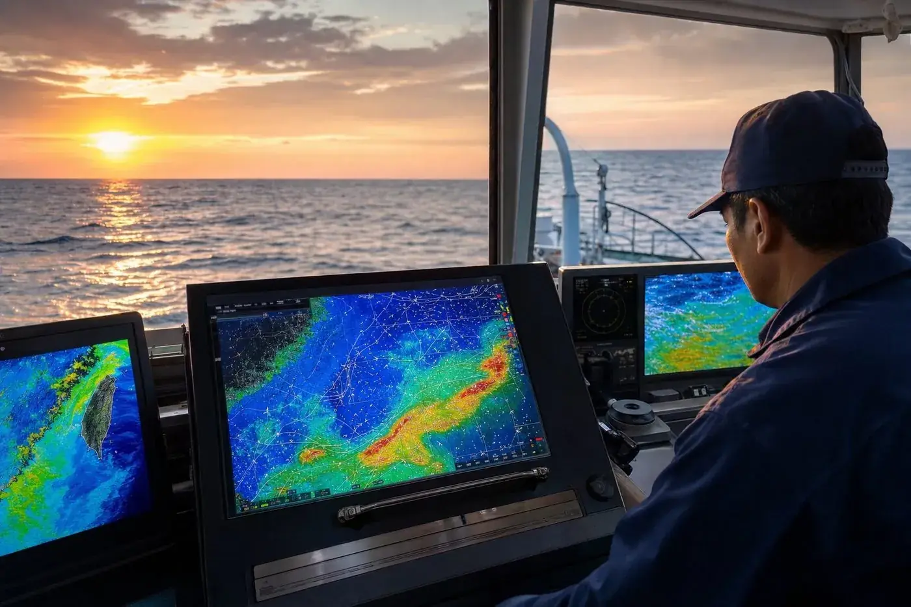
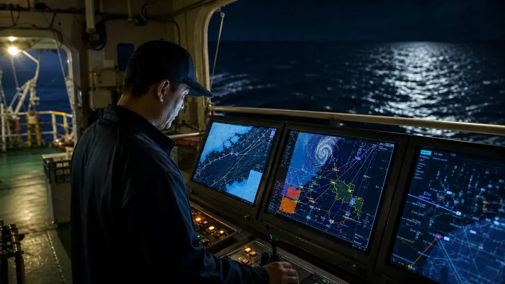
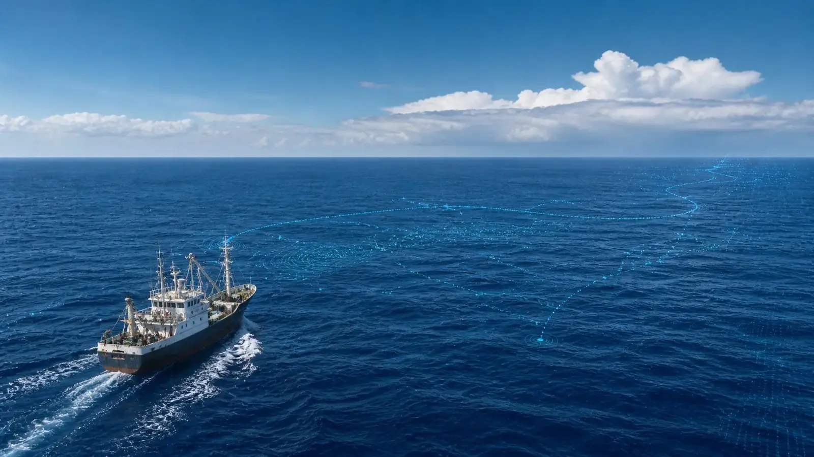

— Chapter 04 / Capabilities —四個核心服務模組
四個核心服務模組
讓海上每一個判斷都有據可依
上一章的技術引擎，最終具現化為四項您可以實際操作的服務—— 熱圖、監控、預警、定位，環環相扣。

/ 01
海洋熱圖分析
整合 NOAA OISST、CMEMS BGC、HYCOM 三維剖面等多源衛星資料，以高斯適合度與 Stacking Ensemble 模型計算棲息適合度指數（HSI）。系統設計支援駕駛艙多螢幕同步展示——左側區域海溫、中央葉綠素與洋流疊圖、右側雷達回波。
- 1–3 日漁場機率場預測
- 多層次海洋參數疊圖
- 駕駛艙多螢幕展示（設計階段）

/ 02
全域監控中心
系統設計支援陸基指揮中心同步呈現颱風路徑、太平洋海溫熱圖、洋流變化與船隊作業位置，並對個別船舶之油耗、載貨與航程進行監看；異常事件可觸發雙向訊息中繼。
- 多船位即時可視化（設計能力）
- 地理柵欄與越界警報
- 船岸雙向訊息中繼

/ 03
氣象預警系統
結合 JTWC、GDACS 多源颱風資料與 TCHP 颱風熱含量自研增強模型，提供 72 小時颱風路徑與強度預警；以 Persistence + Beta-Advection 模型推算路徑，並可建議避航備案。
- 72H 颱風路徑與強度預警
- 波浪 / 風速 / EEZ 安全過濾
- 避航路徑建議（系統能力）

/ 04
衛星資料整合
整合 GFW（Global Fishing Watch）全球漁船 AIS 活動資料與低頻寬衛星通訊（Iridium SBD），於遠洋海域以 < 5KB 純文字簡報傳遞關鍵資訊；支援 IMO/EEXI 燃油與 CO₂ 合規計算。
- GFW AIS 全球漁船活動整合
- Iridium SBD 衛星簡報（< 5KB）
- EEXI / CII 合規計算